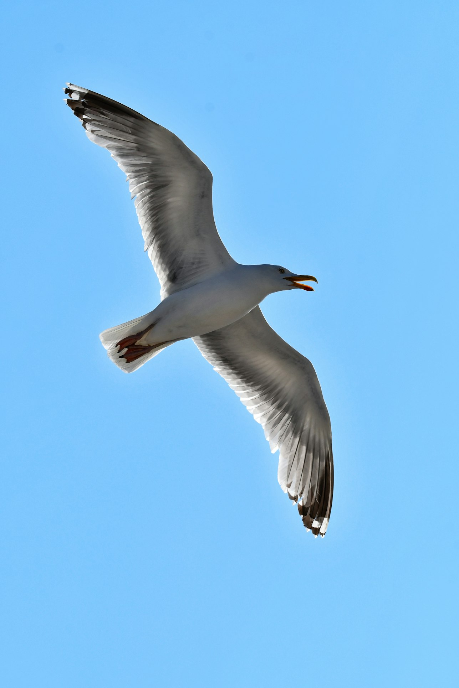
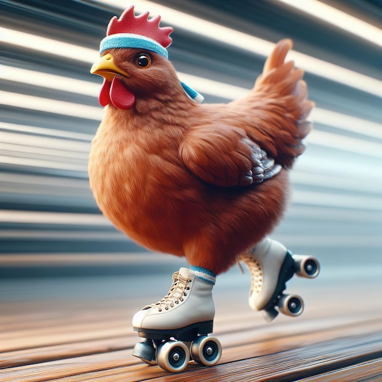
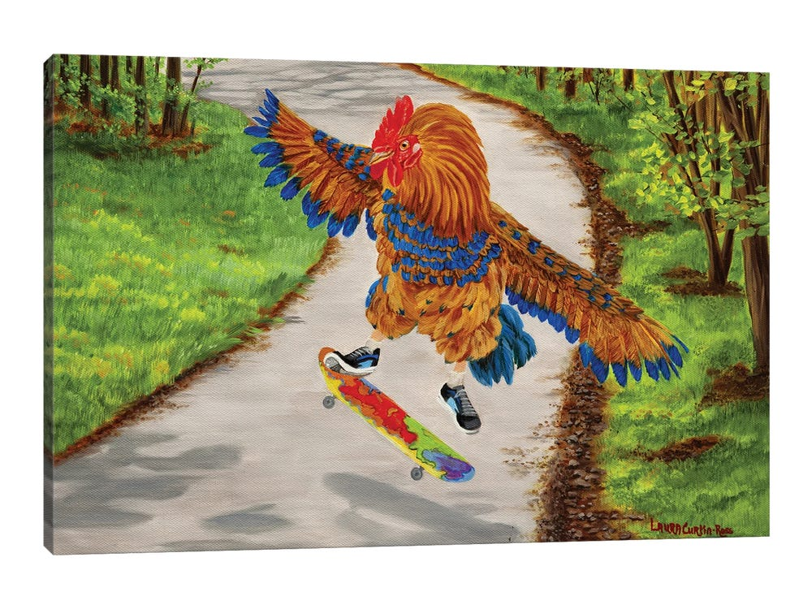
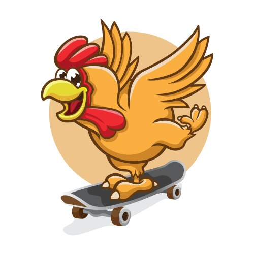

This is the amusing tale of how a chicken's quest for flight led her to an unexpected and hilarious adventure involving a pair of rusty roller skates and a wild ride through the farm where she lived
A Chicken's Dream of Flight
Once upon a time, in a quiet farmyard, there lived a chicken named Cluckers who had a dream unlike any other chicken: Cluckers wanted to fly. Every day, Cluckers watched enviously as the sparrows, swallows, and even the occasional crow soared gracefully through the sky. Cluckers tried flapping her wings harder than any chicken had before, but alas, she never managed more than a few clumsy hops.
The Discovery of Rusty Roller Skates
One sunny afternoon, Cluckers stumbled upon a pair of old, rusty roller skates in the barn. They were tucked away behind some hay bales, forgotten and covered in cobwebs. A brilliant idea struck Cluckers: if she couldn't fly, maybe she could at least glide. With some effort, she strapped the roller skates onto her little chicken feet and wobbled unsteadily out of the barn. She positioned herself at the top of the hill that led down to the vegetable garden, took a deep breath, and pushed off.
The Wild Ride through the Garden
At first, Cluckers was thrilled as she picked up speed, the wind ruffling her feathers. She zoomed past the corn and the cabbages, feeling more alive than ever. But soon, Cluckers realized she had no idea how to stop. The skates, rusty and unpredictable, had a mind of their own. Cluckers careened through the garden, hitting a bump that sent her flying - not in the way she had dreamed, but in a spectacular tumble. She landed in the pigsty, splashing mud everywhere and startling the pigs.
The Triumph of The Roller-Skating Chicken
Covered in mud and laughing at the absurdity of her adventure, Cluckers clucked triumphantly. She might not have flown like a bird, but she had experienced a wild ride that none of her chicken friends could boast about. From that day on, Cluckers became known as the daring, roller-skating chicken, and she embraced her unique way of soaring through life, even if it was with wheels instead of wings.